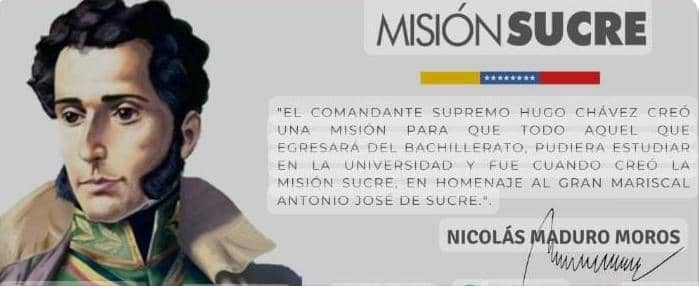

Misión
La misión de la escuela Dr. Leonardo Ruiz Pineda I, en el marco del programa Misión Sucre, es proporcionar a los ciudadanos y ciudadanas que no han podido ejercer una carrera universitaria la oportunidad de ingresar a un sistema educativo para formarse en sus estudios universitarios..
Visión
La visión de la escuela Dr. Leonardo Ruiz Pineda es convertirse en una institución educativa de referencia, brindando una educación de calidad y formando profesionales comprometidos con el desarrollo de la sociedad
Objetivos
1.Proporcionar información sobre el programa Misión Sucre y su implementación en la escuela Dr. Leonardo Ruiz Pineda I.
2.Destacar la labor de Wilson Perdomo como responsable y coordinador de la escuela.
3.Resaltar el crecimiento de la escuela desde sus inicios, con una matrícula inicial de 21 alumnos y la participación de los docentes Karelis Bracamonte, Yusbeli Lucena, Wendy Soto y Nohemi Sandoval.
4.Reconocer la importancia de la Misión Sucre como iniciativa del ex presidente Hugo Rafael Chávez Frías.
